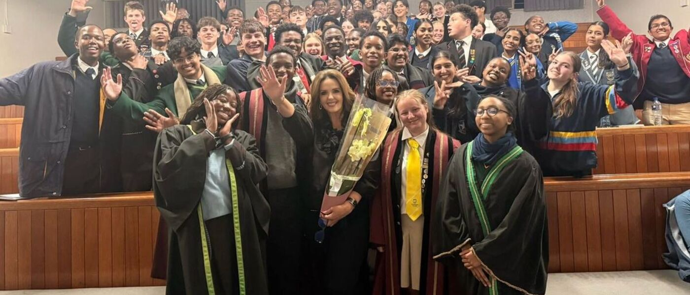

Tue22Sep
Centenary
Centenary dinner
Current councillors, alumni, educators, supporters and guests come together to mark one hundred years of service and leadership.
Keynote by internationally respected journalist Paula Slier: From the Physical War Zone to the Information Battlefield: How to Know What Is True, drawing on her years reporting from conflict zones to talk about media literacy, misinformation and critical thinking.
A personal reflection from Daniella Kilfoil, a former Mini and Junior Councillor from Assumption Convent School and now a member of the Governing Body.
RSVP